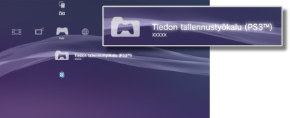

Pelit > PlayStation®3-muotoisen ohjelmiston pelaaminen > Tallennettujen tietojen käyttäminen
Tallennettujen tietojen käyttäminen
PlayStation®3-muotoisten ohjelmistojen tiedot tallennetaan järjestelmän tallennustilaan. Tiedot näytetään kohdassa  (Tiedon tallennustyökalu (PS3™)).
(Tiedon tallennustyökalu (PS3™)).

Vihjeitä
- Kunkin käyttäjän tallennettuja tietoja hallitaan erikseen. Jos kohdassa
 (Käyttäjät) näkyy useita käyttäjiä, kohdassa (Tiedon tallennustyökalu (PS3™)) näytettävät kohteet määräytyvät järjestelmään kirjautuneen käyttäjän mukaan.
(Käyttäjät) näkyy useita käyttäjiä, kohdassa (Tiedon tallennustyökalu (PS3™)) näytettävät kohteet määräytyvät järjestelmään kirjautuneen käyttäjän mukaan. - Jos valitset tallennettujen tietojen kuvakkeen ja painat
 -näppäintä, voit lajitella tallennettuja tietoja päivityspäivämäärän mukaan tai ryhmitellä tallennettuja tietoja nimikkeiden mukaan näyttöön tulevan valikon avulla.
-näppäintä, voit lajitella tallennettuja tietoja päivityspäivämäärän mukaan tai ryhmitellä tallennettuja tietoja nimikkeiden mukaan näyttöön tulevan valikon avulla.
Tallennettujen tietojen säilyttäminen PSNSM -palvelimella
Voit säilyttää PlayStation®3-muotoisen ohjelmiston tallennettuja tietoja PSNSM -palvelimella ja ladata ne toiseen PlayStation®3-järjestelmään pelin jatkamista varten. Tätä toimintoa varten tarvitset Sony Entertainment Network -tilin ja PlayStation®Plus -palvelun jäsenyyden.
Tallennettujen tietojen automaattinen säilytys
Voit lähettää kaikki uudet ja viimeksi päivittyneet tallennetut tiedot automaattisesti onkine-tallennustilaan.
Tämä toiminto on asetettava jokaiselle perille erikseen.
1. |
Valitse kohdasta |
|---|---|
2. |
Valitse [Tallennettujen tietojen automaattinen lähetys] ja aseta se tilaan [Päällä]. |
 (Pelit) peli, jonka tallennetut tiedot haluat tallentaa ja paina
(Pelit) peli, jonka tallennetut tiedot haluat tallentaa ja paina Vihjeitä
- Asetuksen käyttöön ottamisen jälkeen päivitettävät tallennustiedot lähetetään automaattisesti.
- Aseta
 (Asetukset)-kohdasta
(Asetukset)-kohdasta  (Järjestelmäasetukset) > [Automaattinen päivitys] tilaan [Pois päältä], jos haluat poistaa käytöstä tallennustietojen automaattisen päivittämisen.
(Järjestelmäasetukset) > [Automaattinen päivitys] tilaan [Pois päältä], jos haluat poistaa käytöstä tallennustietojen automaattisen päivittämisen.
Tallennettujen tietojen manuaalinen säilytys
1. |
Valitse |
|---|---|
2. |
Valitse [Kopioi]. |
3. |
Valitse tallennussijainniksi [Verkkotallennustila]. |
Tallennettujen tietojen lataaminen online-säilytyksestä PS3™-järjestelmään
1. |
Valitse |
|---|---|
2. |
Valitse tallennetut tiedot, jotka haluat ladata, ja paina |
3. |
Valitse [Kopioi]. |
Vihjeitä
- Suurin mahdollinen käytettävissä oleva säilytystila on 1 Gt, ja tallennettavien kohteiden suurin mahdollinen määrä on 1000.
- Muita kuin PlayStation®3-, PC Engine- ja NEOGEO-muotoisen ohjelmiston tallennettuja tietoja ei voida säilyttää.
- Kopiosuojattuja tallennettuja tietoja käsitellään seuraavasti:
- - Lähettäminen online-säilytykseen: voidaan tehdä milloin tahansa.
- - Tallennettujen tietojen lataaminen online-säilytyksestä: kun kopiosuojattuja tallennettuja tietoja on lähetetty online-säilytykseen tai ladattu online-säilytyksestä, on odotettava vähintään 24 tuntia ennen samojen tietojen lataamista uudelleen.
- Et voi käyttää online-säilytystä kaikkien pelien kanssa. Lisätietoja peleistä tai palveluista, jotka eivät tue online-säilytystä, voi lukea täältä.